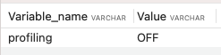
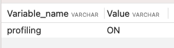
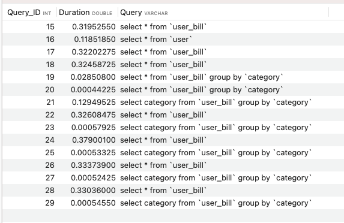
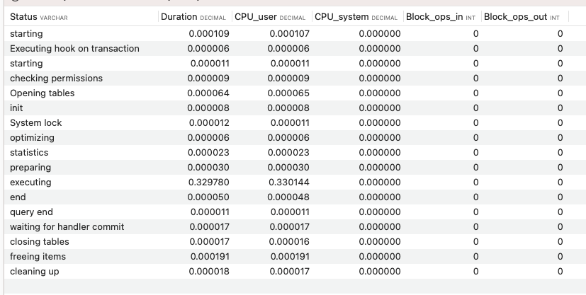
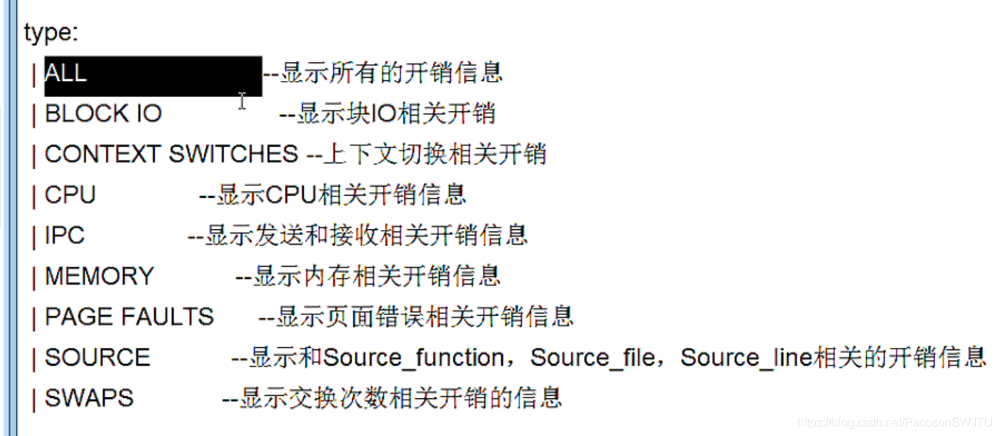

MySQL开启慢查询日志，跑一段时间后拿日志中的慢查询语句进行 explain 分析。
查询到效率低的 sql 语句后，可以通过 explain 分析低效 SQL 的执行计划。看是否可以基于索引查询。
mysql> explain select * from testtb ;
+----+-------------+---------+------------+------+---------------+------+---------+------+------+----------+-------+
| id | select_type | table | partitions | type | possible_keys | key | key_len | ref | rows | filtered | Extra |
+----+-------------+---------+------------+------+---------------+------+---------+------+------+----------+-------+
| 1 | SIMPLE | testtb | NULL | ALL | NULL | NULL | NULL | NULL | 92 | 100 | NULL |
+----+-------------+---------+------------+------+---------------+------+---------+------+------+----------+-------+
1 row in set
各字段说明：
select_type: 表示select 的类型，常见取值有SIMPLE(简单表，即不使用表连接或者子查询)、PRIMARY、UNION、SUBQUERY等。
table: 输出结果集的表
type: 表示Mysql 的访问方式(从上到下依次变快)
type=all，全表扫描，Mysql 遍历全表来找到匹配的行
type=index，Mysql 遍历整个索引来找到匹配的行
type=range，索引范围扫描
type=ref，使用非唯一索引扫描或唯一索引的前缀扫描
type=eq_ref，使用唯一索引
type=const/system，单表中最多只有一个匹配行
type=NUll，MySQL 不用访问表或者索引就能直接得到结果
possible_keys: 表示查询时可能用到的索引
key: 表示实际用到的索引
key_len: 使用到索引字段的长度
rows: 扫描行的数量
Extra: 执行情况的说明和描述。
show profile 是 mysql 提供的可以用来分析当前回话中语句执行的资源消耗情况的工具，提供了比 explain 更加细粒度的 sql 执行计划分析和sql优化；
可以让我们了解到SQL到底慢在哪个环节。
默认情况下，profile 参数处于关闭状态，并保持最近15次的运行结果；
1、首先查看是否支持show profile，如果支持，开启profiling,如下是否支持使用
show variables like 'profiling';
2、开启功能，默认是关闭，使用前需要开启；
set profiling = 1;
3、运行要分析的慢 sql
4、查看结果
show profiles;
5、诊断sql， show profile cpu, block io for query 上一步前面的问题sql数字号码；
查看一条sql的完整生命周期
show profile cpu, block io for query 28;
补充： 不仅仅可以查看 cpu, block io ， 还可以查看如下类型的信息；

show profile cpu, block io for query 3; 中的 status 中出现以下4种中的一种或几种，则sql执行效率较差，需要优化；
1、converting heap to myisam 查询结果太大， 内存都不够用了，往磁盘上搬；
2、creating tmp table 创建临时表： 拷贝数据到临时表，用完再删除；
3、copying to tmp table on disk， 把内存中临时表复制到磁盘，危险
4、locked ：锁住；
通过以上三步基本就可以很好的定位和分析 SQL 执行效率方法。
除以上三种之外还可以：
1、通过show status查询SQL执行频率
2、使用参数 show processlist：查询MySQL线程状态、是否锁表
3、使用 trace 查看优化器如何选择执行计划
这三种很少用，不再说明
[1] MySQL开启慢查询日志: //wangmaolin.net/article/8loynxoez3.html#mysql-%E6%85%A2%E6%9F%A5%E8%AF%A2%E6%97%A5%E5%BF%97